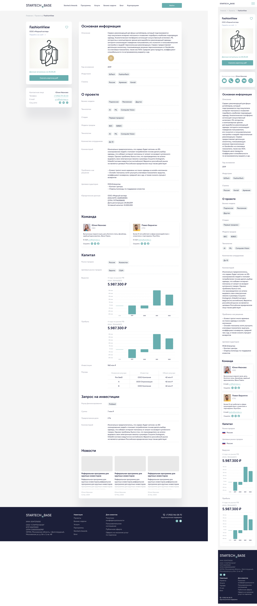
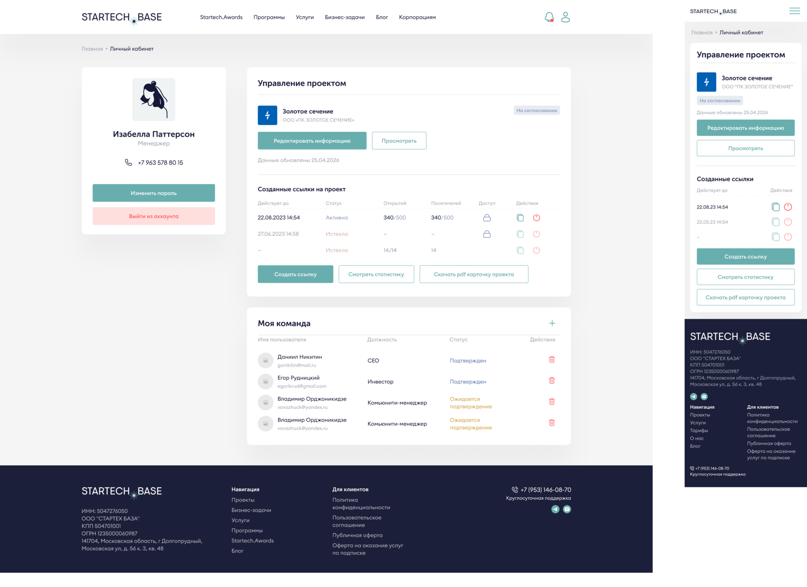

A startup profile as a tool for external communication
How we turned a startup profile into a way to share project information
View websiteStartech.Base is a B2C platform connecting startups, investors, and corporations. It is a database of technology companies and startups where founders can publish structured information about their products: the team, technology, business model, stage of development, case studies, and other details relevant to potential investors and partners.
Registration and publishing a profile are free for startups.
Investors and corporations use the platform to find investment opportunities or technology solutions for business needs. Access ranges from basic database search to advanced plans with dedicated support and more detailed project information, including tailored scouting.
In brief
We designed a system for sharing project profiles, turning an internal startup questionnaire into a tool for communicating with investors, partners, and accelerators.
My role and contribution
I was the sole designer at the post-MVP stage, responsible for product design across the platform's key areas.
For this project, I:
— defined the project profile concept and its use cases
— designed the experience for generating and managing links
— designed the public project page
— restructured the startup questionnaire for read-only viewing
— designed the link management module in the startup dashboard
— helped define access rules, privacy, and limits
Context and problem
Originally, the startup questionnaire was only used inside the platform as a profile for finding investment and technology solutions. The platform already held a substantial amount of well-structured project data that was updated regularly.
Outside the platform, however, startups still had to:
— create separate presentations
— update pitch decks manually
— duplicate information in different formats
— send outdated materials to investors and partners
Demand for tools to share project information also grew after some international services left the market. We saw an opportunity to build a new use case on the platform's existing structure.
Solution and concept
Instead of creating a separate presentation builder, we reused the structure of the startup questionnaire. We designed a public project profile that anyone could open through a link without registering. It gave startups another way to present their profile outside the platform.

Startup dashboard
I designed a dedicated module in the startup dashboard for managing project profiles.
It includes a list of active links, access controls, and view statistics.
Users can:
— generate a unique project link
— control access to the profile
— set a link expiration date
— limit the number of views
— export a PDF version of the project
— track page views
A project could also remain unpublished in the public database to preserve privacy.

Outcome
We turned an internal startup questionnaire into a tool for external communication. It expanded the platform beyond investment search and gave Startech.Base users another practical benefit.